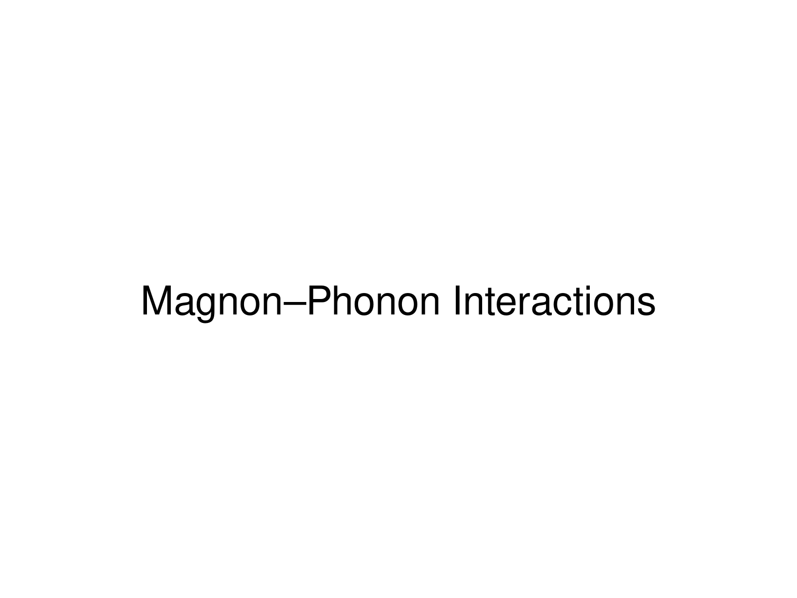

Spin waves (magnons) and lattice vibrations (phonons) are often treated as independent excitation channels. In real materials, spin–orbit coupling, exchange striction, and magnetoelastic interactions mix the two, producing hybrid quasiparticles whose properties differ qualitatively from either parent mode. I use inelastic neutron scattering (INS) and resonant inelastic X-ray scattering (RIXS) to resolve this hybridization directly, mapping how magnon branches couple to optical phonons in itinerant antiferromagnets and correlated insulators.
By tracking dispersion renormalization, linewidth broadening, and spectral-weight transfer as functions of momentum, energy, temperature, and applied field, we extract the microscopic spin–lattice coupling constants that govern the hybridization. These constants are then incorporated into model Hamiltonians, connecting the hybrid excitation spectrum to measurable bulk quantities such as thermal conductivity, the spin Seebeck coefficient, and magnon lifetimes. The measurements combine time-of-flight inelastic neutron scattering on SEQUOIA, ARCS, HYSPEC, and TAX at SNS and HFIR with synchrotron RIXS, nuclear resonant inelastic X-ray scattering (NRIXS), and Mössbauer spectroscopy, supported by neutron diffraction and benchmarked against ab initio lattice dynamics. Central questions include when spin–lattice coupling produces avoided crossings rather than broadened continua, how disorder tunes the hybridization strength, and whether transport signatures of the coupling can be predicted from scattering data alone.
Hexagonal MnTe is an altermagnetic semiconductor whose large magnon gap is set by single-ion anisotropy and exchange. Using the HYSPEC and ARCS spectrometers at the Spallation Neutron Source (SNS, ORNL), we measured the full magnon dispersion across a series of LixMn1−xTe samples spanning a wide doping range. Li substitution on the Mn site both dopes holes into the system and introduces local structural distortions that modify the crystal-field environment of the remaining Mn²⁺ ions.
The magnon gap varies smoothly and systematically with Li content, increasing by more than 50% at moderate doping, while long-range antiferromagnetic order is preserved. Comparison of the measured dispersion with spin-wave theory including a magnetoelastic term shows that the gap evolution is driven primarily by renormalization of the single-ion anisotropy through the spin–lattice interaction; the exchange integrals are essentially unchanged. Li-doped MnTe thus provides a working example of magnon-gap engineering through chemical substitution. In a complementary direction, we tuned the magnetic properties of MnTe with applied pressure rather than chemistry.
See: Magnon gap tuning in lithium-doped MnTe, Phys. Rev. B 109, 214434 (2024), and Tuning the magnetic properties of the spin-split antiferromagnet MnTe through pressure, Phys. Rev. B 112, 014450 (2025).
RuO₂ has attracted considerable attention as a candidate altermagnet, with zero net magnetization but spin-split bands of potential value for spin transport. The existence and magnitude of magnetic order in RuO₂ remain debated, and different probes have yielded conflicting results. We addressed the question from the lattice side, combining phonon spectroscopy (NRIXS) with Mössbauer spectroscopy to constrain the magnetic and electronic state independently of conventional magnetic probes.
NRIXS resolves the ⁵⁷Fe partial phonon density of states in Fe-doped RuO₂ with an energy resolution sufficient to detect the small force-constant shifts that magnetic ordering would produce. Combined with the Mössbauer hyperfine parameters, the data place quantitative upper bounds on any ordered moment in RuO₂ and constrain the degree of electron correlation. The work also demonstrates that phonon-based probes can serve as precise indicators of magnetism in systems where conventional magnetometry is ambiguous.
See: Constraints on magnetism and correlations in RuO₂ from lattice dynamics and Mössbauer spectroscopy, Cell Reports Physical Science (2025), and the APS Global Physics Summit 2025 talk abstract, A local probe study of magnetism in RuO₂ by nuclear resonance scattering.
Current measurements extend this program along the spin-dynamics axis of altermagnetism. In MnTe, we are resolving the interplay of anisotropic paramagnons and polarons above the ordering temperature and the chiral splitting of magnons with its coupling to paramagnons, both presented at recent APS meetings. In hematite, ongoing experiments target the chiral magnon branches predicted by the altermagnetic symmetry.
Magnon–phonon hybridization bears directly on the performance of magnonic and thermoelectric devices. Strong spin–lattice coupling opens avoided crossings that act as frequency-selective gates for spin-wave propagation, and the same coupling modifies phonon lifetimes, and hence thermal conductivity, in ways that purely electronic models do not capture. Our aim is to supply the quantitative microscopic parameters, extracted directly from scattering measurements, needed to engineer these effects rather than only observe them.
For a complete list of publications and presentations, see my Google Scholar profile.